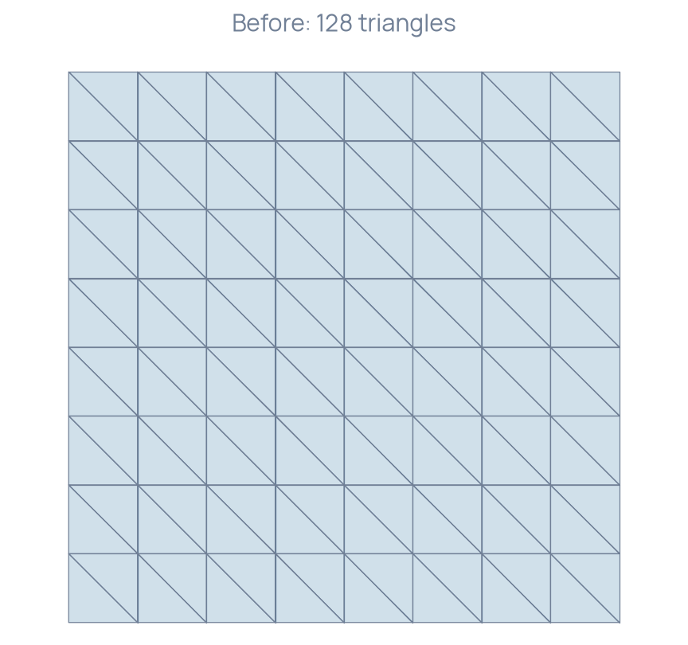
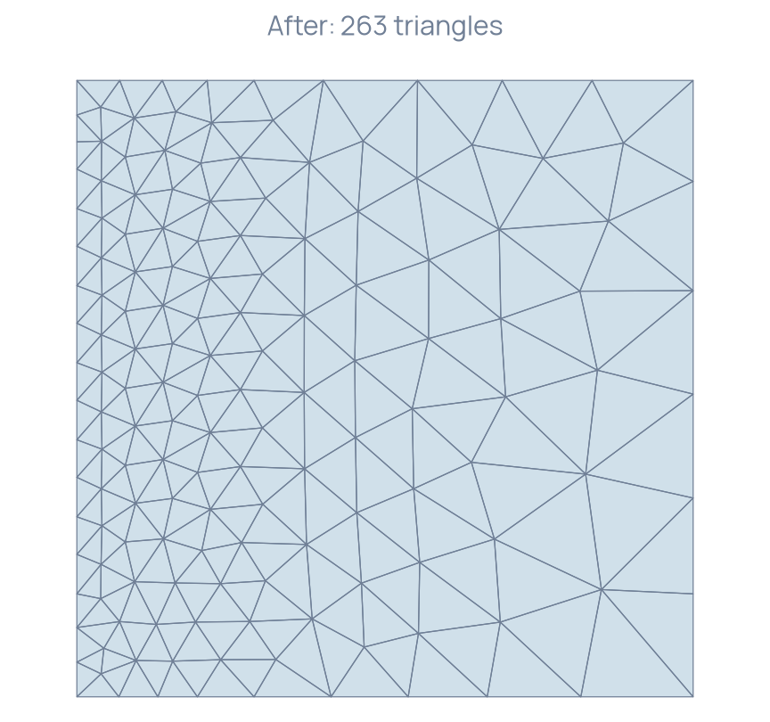

Adapting to a size field
Prescribe local edge lengths and inspect the resulting mesh density.
A spatially varying target
On the unit square, prescribe the scalar edge-size field
The requested size is smallest at the left edge and largest at the right edge. This known field isolates the remeshing operation before a PDE error estimator is introduced. MMG inserts, removes and moves vertices to approach the prescribed sizes under its geometric and gradation constraints.
Construct and pass the size field
The initial mesh has 81 vertices and 128 triangles.
MMG::Mesh mesh; mesh = Mesh().UniformGrid(Polytope::Type::Triangle, {9, 9}); mesh.scale(1.0 / 8.0); mesh.getConnectivity().compute(1, 2); for (const Index corner : {0, 8, 72, 80}) mesh.setCorner(corner);
A scalar nodal field supplies the target edge lengths. MMG::Adapt::adapt consumes that field while changing the mesh. Its space is scoped to this call; construct new spaces on the resulting topology before subsequent field interpolation or PDE solves.
P1 vh(mesh); MMG::RealGridFunction sizeMap(vh); sizeMap = [](const Point& point) { return 0.05 + 0.15 * point.x(); }; MMG::Adapt().setHMin(0.04).setHMax(0.21).adapt(mesh, sizeMap);
Inspect density and domain preservation


The size field is an input to remeshing. A solve–estimate–adapt loop also needs a specified error indicator, its conversion to positive target sizes, field transfer and a stopping criterion. Each of those choices affects the numerical approximation and should be checked for the intended PDE.
Build and run
Build the MeshAdaptation target. It writes the input and output meshes as Before.medit.mesh and After.medit.mesh, along with triangle CSV files used for the figure. The program checks positive triangle areas and unit total area with tolerance .
The complete program is available in MeshAdaptation.cpp.